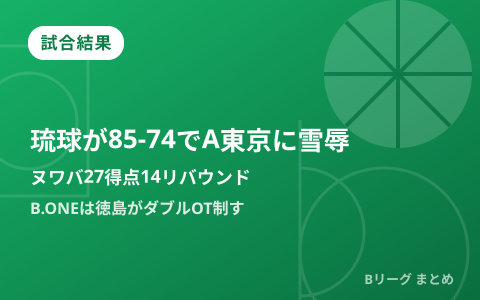

琉球がA東京に85-74でリベンジ ヌワバ27得点14リバウンド、B.ONEは徳島がダブルOTの死闘制し横浜EXを撃破

9月23日、開幕2連戦目となるTOYOTA ARENA TOKYOでのアルバルク東京vs琉球ゴールデンキングスは、琉球が85-74で勝利。前日の開幕戦を落とした琉球が新加入デイビッド・ヌワバの27得点14リバウンドの活躍でリベンジを果たし、開幕カードは1勝1敗の五分に持ち込まれました。一方、同日行われたB.ONEの徳島ガンバロウズvs横浜エクセレンスは最大13点差を跳ね返す大逆転劇となり、ダブルオーバータイムの末に綱井勇介の劇的ブザービーターで徳島が93-92の勝利を収めています。開幕週2日目に生まれた2つの熱戦を振り返ります。
琉球はヌワバが前半だけで20得点、10年前と前日の「二重の雪辱」
前日の開幕戦を84-73で落とした琉球ゴールデンキングスは、この一戦を新加入のデイビッド・ヌワバが牽引しました。前半だけで3ポイント4本を含む20得点をマークするなど早い時間帯からアルバルク東京を突き放し、最終的には27得点14リバウンドのダブルダブルで勝利に貢献。琉球にとってアルバルク東京は2016年のBリーグ初年度開幕戦でも敗れた相手であり、10年前の雪辱と前日の借りを同時に返す一戦となりました。ヌワバのほかケビン・ジョーンズが16得点7リバウンド、大浦颯太が9得点8アシストと続き、チーム全体で得点を分け合う勝利となりました。
指揮官マクヘンリー氏「勝ててよかった」、開幕カードは1勝1敗に
今シーズンから琉球の指揮を執るアンソニー・マクヘンリー・ヘッドコーチは試合後、「勝ててよかった」と安堵の言葉を口にしたと報じられています。前日は接戦の末に競り負けただけに、連戦2戦目での勝利はチームにとって大きな意味を持つものとなりました。これでB.PREMIER開幕カードとなったアルバルク東京vs琉球ゴールデンキングスの2連戦は1勝1敗の五分となり、両チームとも開幕週の残りの試合に弾みをつけたい展開です。
| 選手（琉球） | スタッツ |
|---|---|
| デイビッド・ヌワバ | 27得点 14リバウンド |
| ケビン・ジョーンズ | 16得点 7リバウンド |
| 大浦颯太 | 9得点 8アシスト |
B.ONEは徳島が最大13点差を逆転、綱井勇介がダブルOTの死闘を制す
同じ9月23日、アスティとくしまで行われたB.ONEの徳島ガンバロウズvs横浜エクセレンスは、リーグ屈指の激戦となりました。徳島は一時最大13点差を追う展開でしたが、第4Qにドーソン選手や新加入のアブアカーカス選手らの活躍で試合を振り出しに戻すと、延長・再延長までもつれる展開に。最終的にはダブルオーバータイムの末、綱井勇介が試合終了間際に劇的なブザービーターを沈め、93-92の逆転勝利で徳島にとって新カテゴリー「B.ONE」初勝利をもたらしました。
Q. 開幕カードの2連戦はどちらのチームが勝ったことになる？
A. アルバルク東京vs琉球ゴールデンキングスの開幕2連戦は、9月22日にA東京が84-73、9月23日に琉球が85-74で勝利し、1勝1敗の五分に終わりました。B.LEAGUEでは開幕週のように同一カードを連戦で組む形式が一般的です。
出典：バスケットボールキング「新加入のヌワバが27得点14リバウンドの大暴れ…琉球がA東京にリベンジ果たしBプレミア初勝利」／バスケットボールキング「綱井勇介が試合終了間際に劇的ブザービーター…徳島がダブルOTの激闘を制し横浜EXを撃破」／琉球新報「キングス第2戦勝利 アルバルクに85-74」／サンケイスポーツ「琉球、A東京に勝利 前日と10年前の雪辱果たす マクヘンリーコーチ『勝ててよかった』」／BASKET COUNT「琉球ゴールデンキングスが85-74で勝利して開幕カードは1勝1敗の痛み分けに」ほか
https://basketballking.jp/news/japan/20260923/634082.html
https://basketballking.jp/news/japan/20260923/634138.html
https://ryukyushimpo.jp/news/entry-5522049.html
https://news.yahoo.co.jp/articles/5dac63242c64fe8a709c644e6be63f19dfcd33bb
https://news.yahoo.co.jp/articles/a9c7fd259b1b5893790e78ad8d9818de677c5a11